Project Scope:
- My Role: UX Design, interactive design
- Tools: Sketch, Adobe XD
- Timeline: Jan 2019 3 Days (72 Hours)
- Deliverables: Sketches, mockups, restructured IA
- Team: Me, myself and I
Background
During my interviewing process at IBM, I was asked to do the following design challenge. This interview was for the Patterns Design Internship hosted in Asutin, TX at IBM's design studio.
Download Slide DeckThe Challenge
Redesign parts of a website for the world’s largest museum: The Louvre.
Your co-worker, a user researcher, has analytics that show many users are looking for information on prominent pieces of art, but are leaving before they find what they want. Propose changes to address this feedback.
The Louvre WebsiteBefore

After

01. Understanding the Problem Space
Defining Assumptions & Research Goals
As a student that constantly uses this portal, I had many assumptions and ideas behind what the new redesign could look like. It was tempting to start jumping into ideas of what this portal could look like, but I wanted to test my assumptions. Our team needed to establish goals. Before interviewing students, we wrote down research goals and questions we wanted answered. This allowed us to form a consensus around what we wanted to learn.
Questions about Users:
- Why are users leaving the site before finding the art information?
- Why are they looking for this art information in the first place?
- Whom is the target user looking for this art information?
- What kind of information are they looking for about the art? Date created? Artist? Market price? The context of the art? Meaning behind the art?
Questions about the Louvre:
- What kind of information does the current site provide about the art?
- Does the site currently provide information about the art?
- What are the pain points of the site?
- What is the user flow for finding art information?
- What other analytics are being tracked on the Louvre site?
If I had more time I would:
- talk with the UX researcher to find out more about the target user through analytics tool such as Google Analytics to find out demographic, age, sex, etc.
- talk with the PM about the goals & how to measure success.
02. Research
Personal Usability Test
As a result of limited time, I decided to conduct a personal usability test instead of testing it with multiple users. I felt that I could provide authentic and honest feedback from the perspective of a new user. During this ‘personal’ usability test, I found a few issues/opportunities for improvement with the current interface mentioned above.
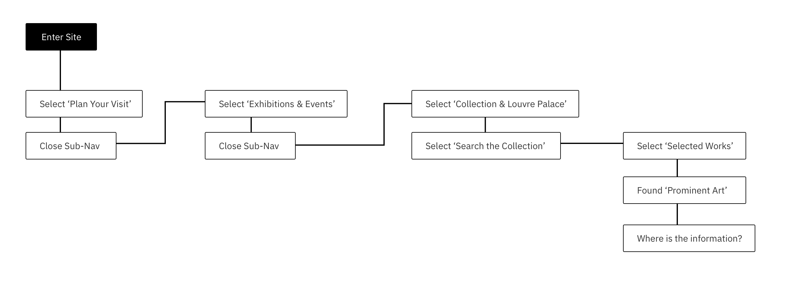{kind=link}
I decided to do a usability test for two reasons:
- Discover the current user flow on the website
- To gather qualitative behavioral feedback because the UX researcher had provided quantitive feedback from the analytics
Competitive Analysis
As part of my process, I like to conduct an analysis of competitors to gather inspiration and find common trends. It also allows me to find out how others are solving problems.
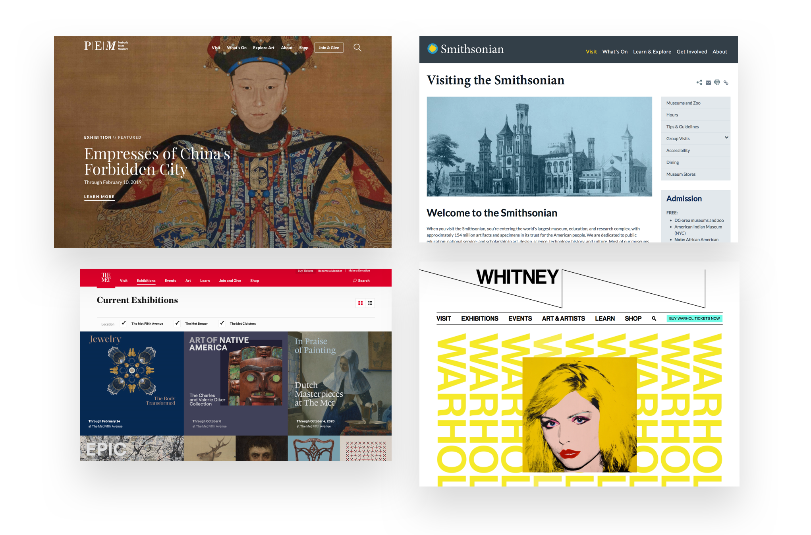{kind=link}
Each of these museum websites had the following:
- Simple navigation labels to help users seamlessly navigate throughout the site to find what they need.
- Clear CTA (Call to Action) buttons to inform the users about the objective of the site.
- Filtering & searching tools to allow users to search & discover art displayed in the museum.
03. Define
Persona & Job Stories
{kind=link}
Job Story
As a museum visitor, I want to access information about the art in Louvre, so that I can plan what galleries and exhibits I’m interested in seeing during my visit.
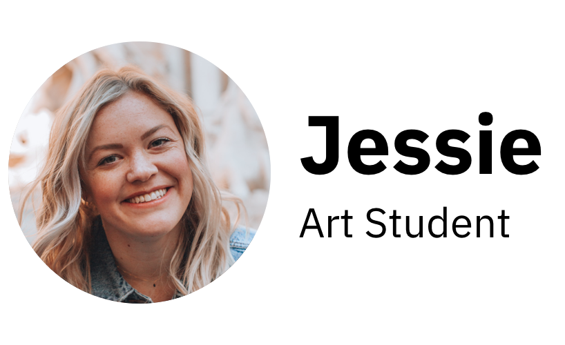{kind=link}
Job Story
As a art history student, I want to learn about the context and history of the art, so that when I see the art in-person I can understand the deeper meaing.
If I had more time I would:
- find out more about the target user through analytics tool such as Google Analytics to find out demographic, age, sex, etc.
- conduct a survey through the site to discover the intention of users visits to the site.
Pain Point 01
The navigation not clearly labeled which may cause confusion when navigating through the site.
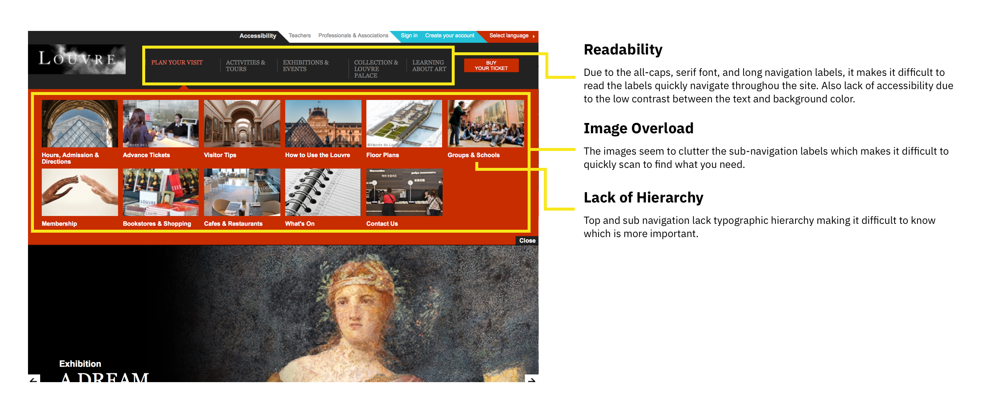{kind=link}
Pain Point 02
There are no search filters that may make it difficult to find specific art in the museum.
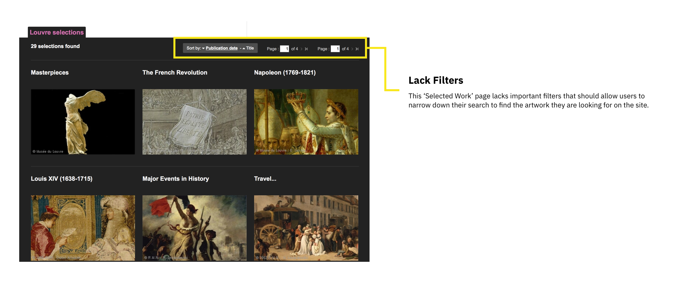{kind=link}

Pain Point 03
The ‘Selected Works’ page doesn’t provide information about the location of the gallery in the museum
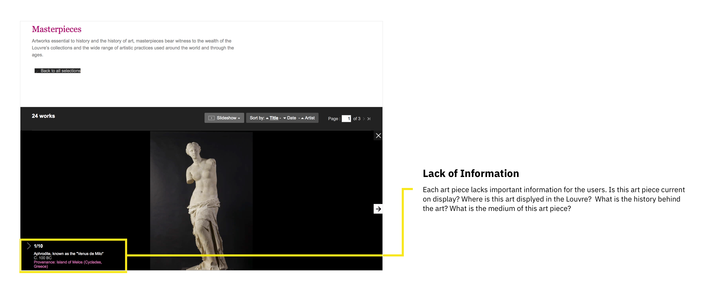 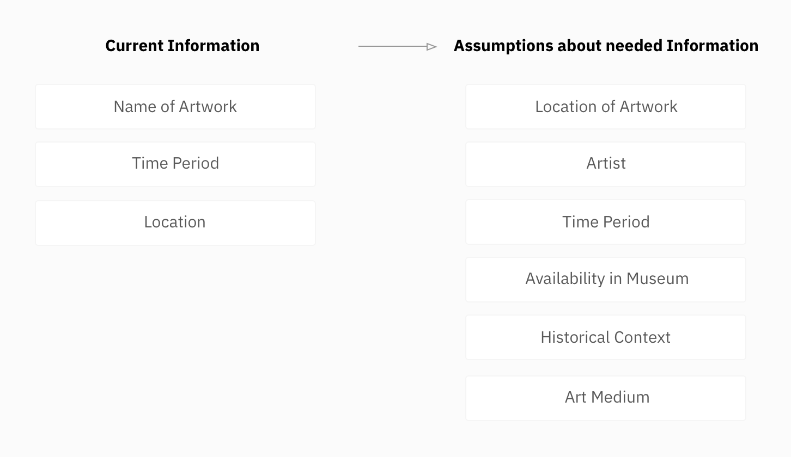{kind=link}
{kind=link}
04. Design
Simplifying the Navigation Labels
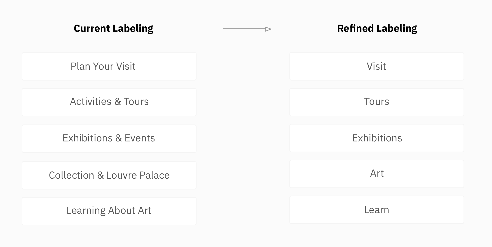{kind=link}
If I had more time I would:
- conduct a remote open & closed card sort of the menus & sub-menus in the site to determine the best structure of the site map.
Sketches & Wireframes
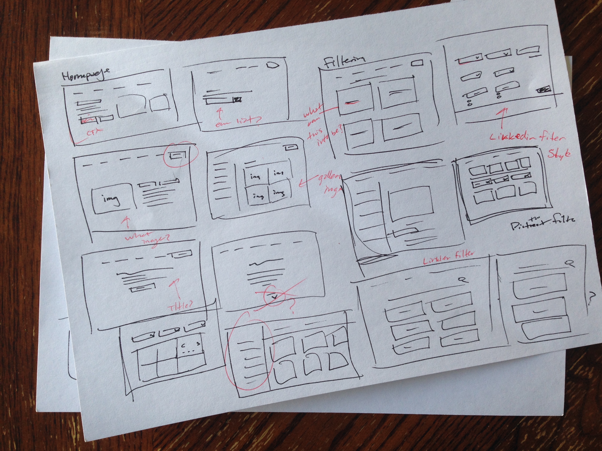{kind=link}
Exploring Concepts - Homepage
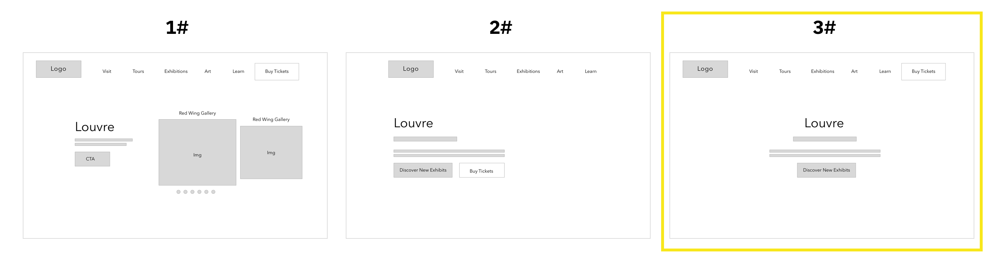{kind=link}
Why I went with concept 3?
After exploring ideas, we created a higher-fidelity of the wireframes with further detail. To gather early feedback we printed out the wireframe and showed it 6 students on campus. As the students gave us feedback on the new design, we took notes on the print out.
Exploring Concepts - Filter Page
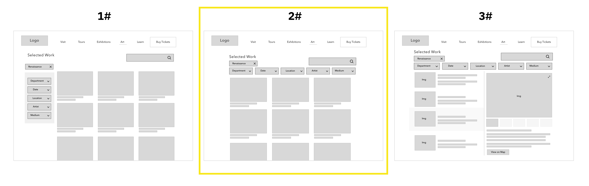{kind=link}
Why I went with concept 2?
After exploring ideas, we created a higher-fidelity of the wireframes with further detail. To gather early feedback we printed out the wireframe and showed it 6 students on campus. As the students gave us feedback on the new design, we took notes on the print out.
Visual Design
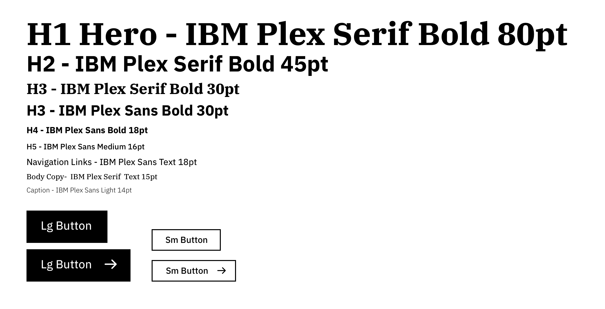{kind=link}
If I had more time I would:
- create a mood board to gather inspiration and ideas on how the visual design could look.
- present visual mockups to stakeholders to understand what look and feel they want the Louvre museum site to communicate.
- find out it the Louvre has a brand style guide that the site follows.
Final Mockups
Homepage
Homepage - Menu

Search Page
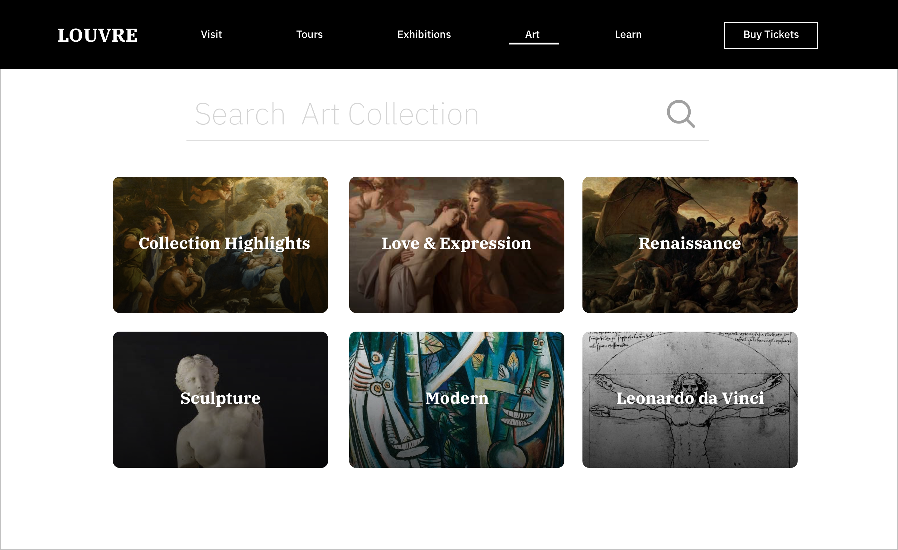{kind=link}
Filter Page
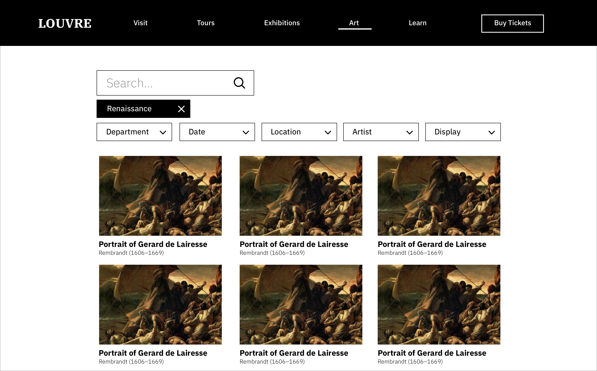{kind=link}
Art Page
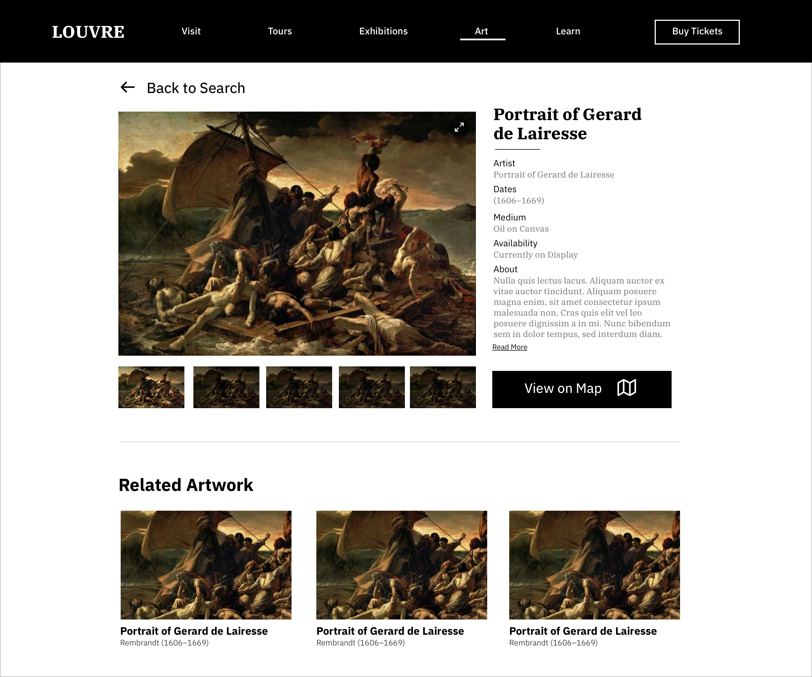{kind=link}
Map Location
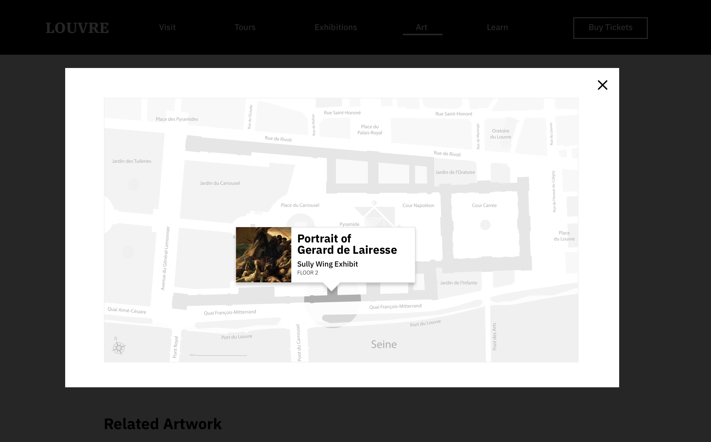{kind=link}
Image Modal

07. What's Next?
Testing Evaluation
Some important next steps include the following: 5-second test, usability test, benchmark testing, and A/B testing. The 5-second test would allow me to test to see what reactions users have to the current homepage. Usability test helps me to find out if the user flow is simple and aligns the users, mental model. A/B testing would provide a comparison of the old to the new site design.
Measuring Success
Throughout the testing mentioned above, I think it would be important to measure the following: task completion, measure timing, NPS score, and the number of errors.
Things to consider:
- Are the personas I made assumptions about accurate?
- What are other pain points in the site that haven’t been addressed?
- If I did more usability tests would I find more pain points?
- How would I find out what information users are looking for on the site?
What I’d do differently?
- Conducted more usability tests to find out other pain points in the site
- Sketched more designs layouts to have more options to decide from
- Better define the personas beyond the job stories